"Tischlein deck dich" - Bord, dekk deg
Prosjektet tar utgangspunkt i seks «Plattenbau»-blokker fra 1957 i Friedrichshain-Kreuzberg, Berlin. På grunn av et akutt behov for rimelige utleieboliger utforsker prosjektet en påbygning på eksisterende strukturer med opptil 5 etasjer. Påbygget baserer seg på en uavhengig «bord»-konstruksjon som avlaster de eksisterende bæreveggene. Samtidig fungerer konstruksjonen som underlag for nye balkonger og et nytt svalgangssystem, og åpner for at leilighetene kan omstruktureres og tilby et bredere spekter av størrelser tilpasset ulike behov. Den tidligere parkeringsplassen viker for et fremtidsrettet parkeringshus, og de udefinerte uterommene mellom blokkene aktiveres med paviljonger, verksteder og en scene.
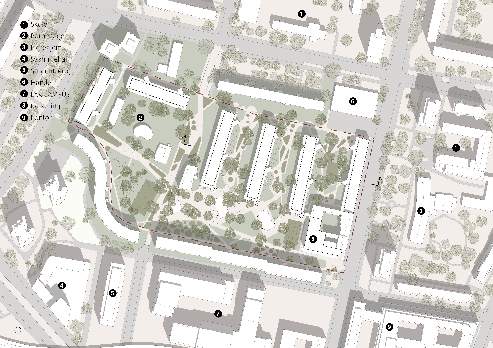
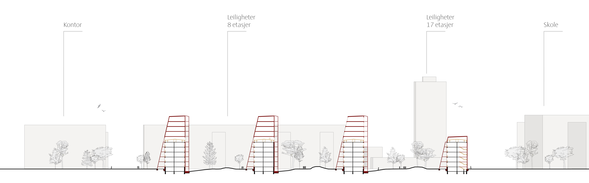
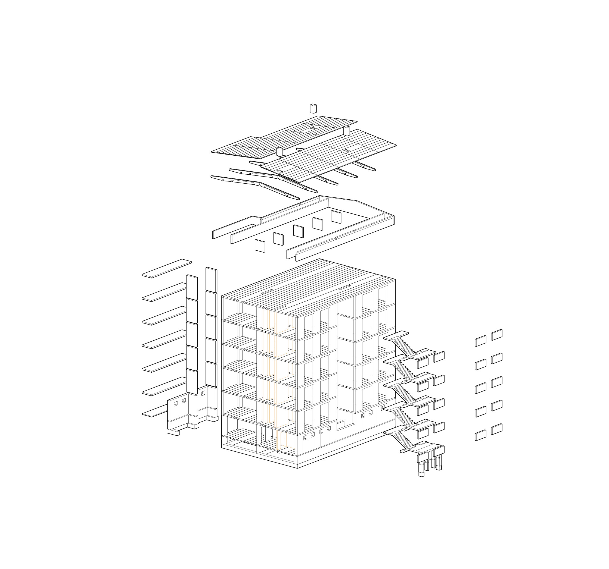
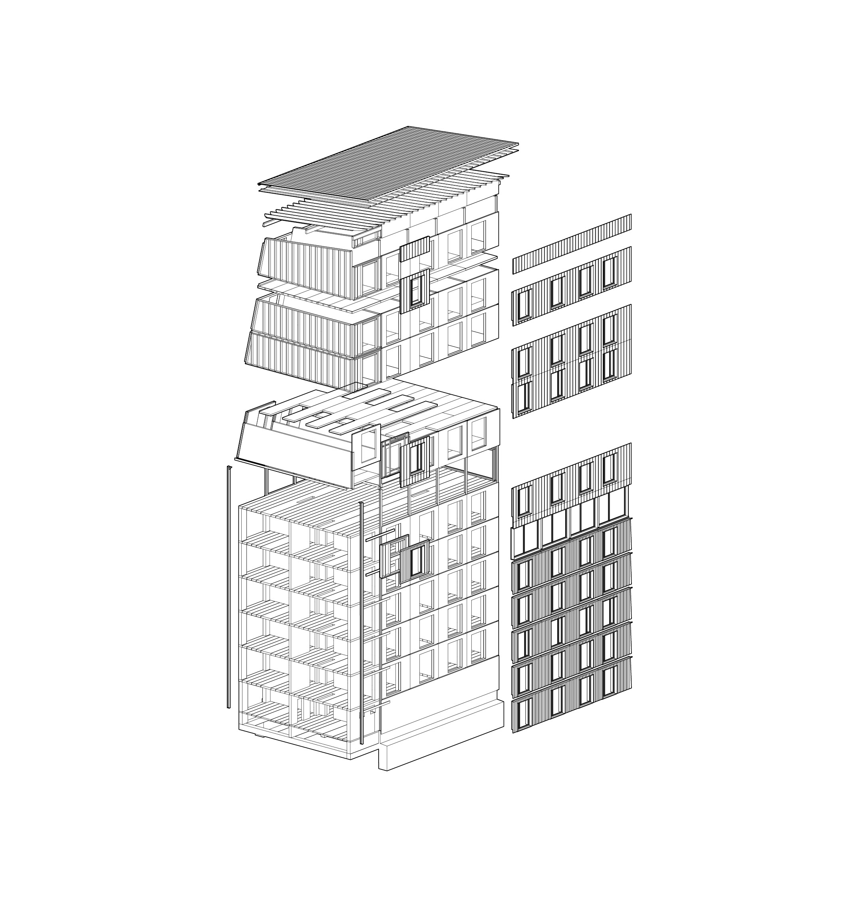
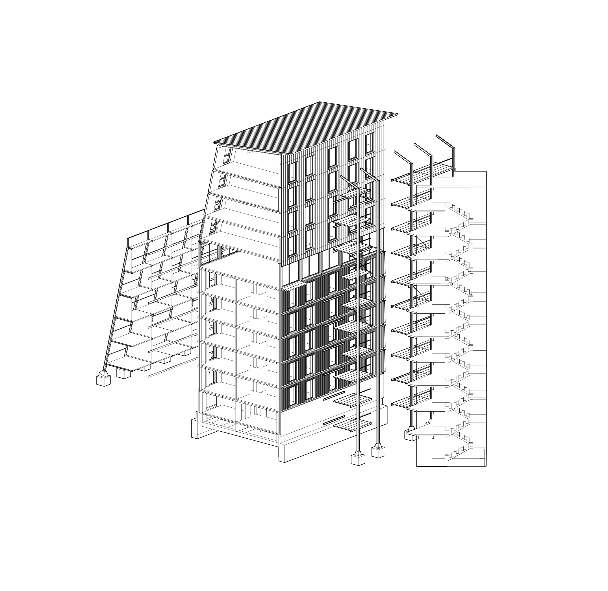
De eksisterende femetasjes elementbygningene etterisoleres og bygges på med fem nye etasjer, båret av et nytt, eget bæresystem som avlaster de gamle veggene. De innvendige trappene flyttes ut og blir en del av en ny svalgang på utsiden, som også er bærende, og balkonger på motsatt side. Løsningen er tenkt for serieproduksjon og lave kostnader da boligene skal være rimelige utleieboliger. Med fem nye etasjer når bygningene samme høyde som nabobygningene på 10-15 etasjer, og beholder de store grøntarealene mellom seg.

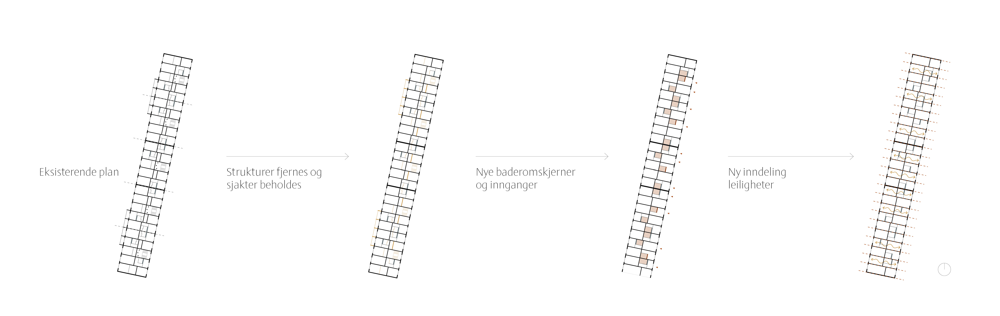
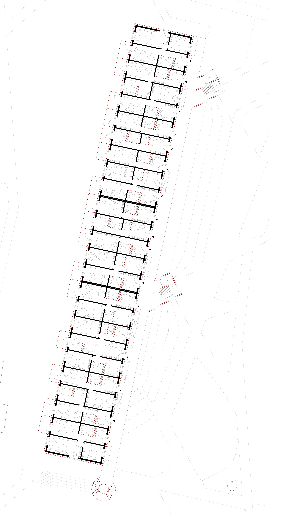
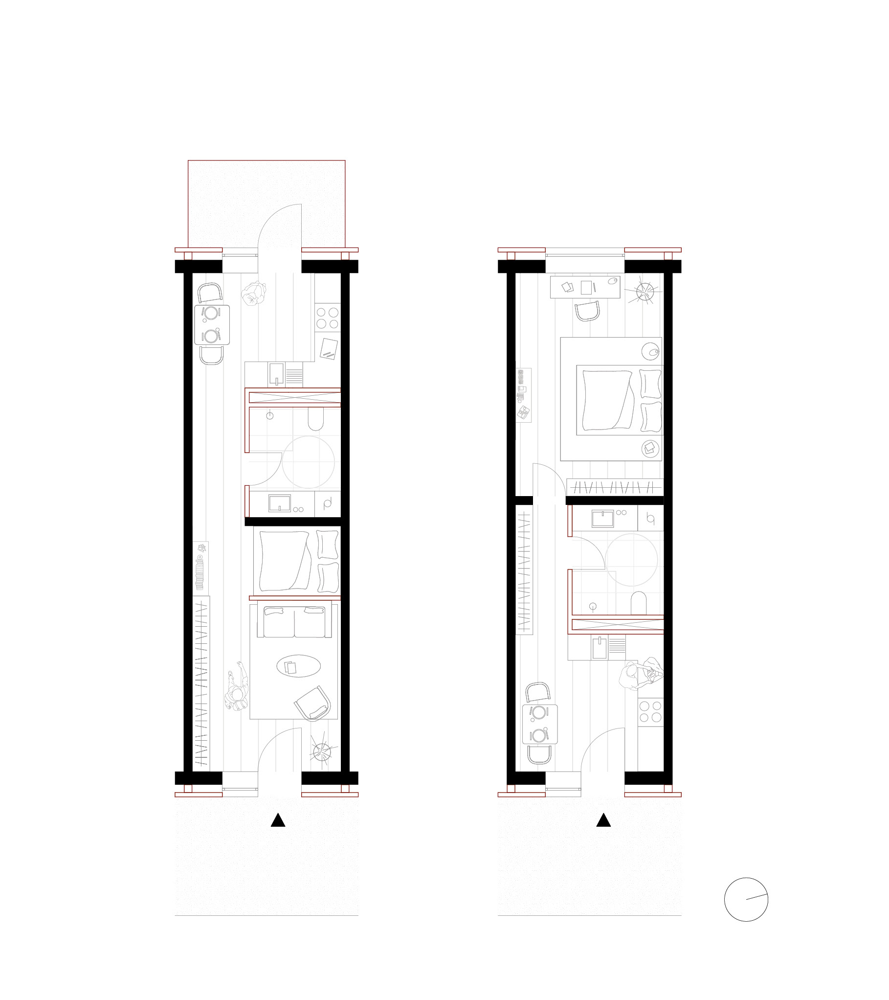
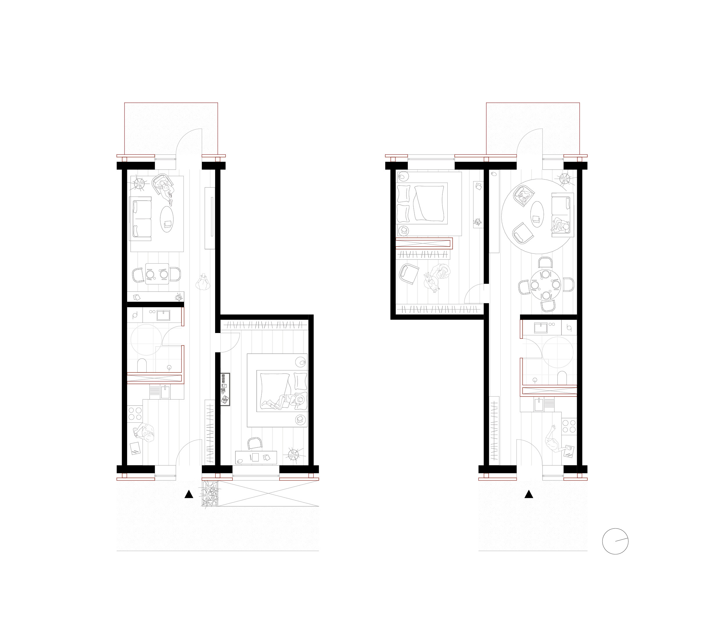
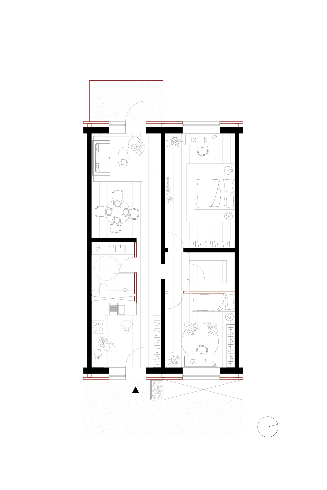
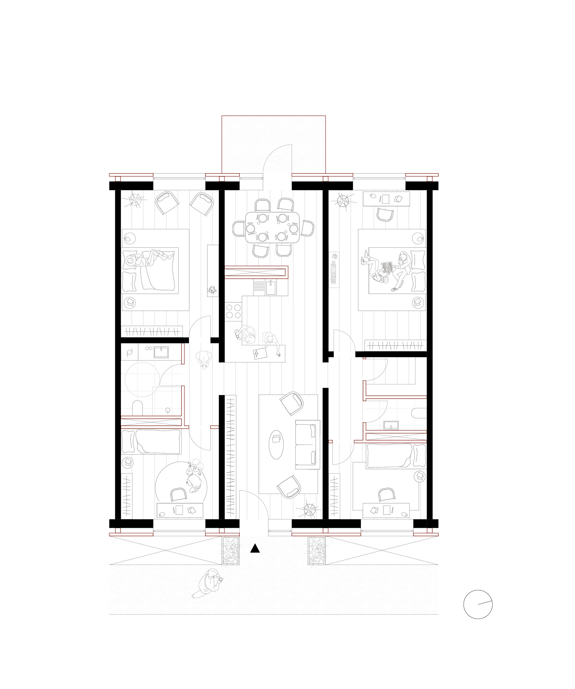
Leilighetene baserer seg på aksesystemet fra eksisterende bygninger som danner en grunnenhet som kan kombineres og utvides etter behov. Det er fire leilighetstyper: 1-enhet, 1½-enhet, 2-enhet og 3-enhet. Alle leilighetene er gjennomgående med inngang fra svalgangen i øst og med balkong i vest.
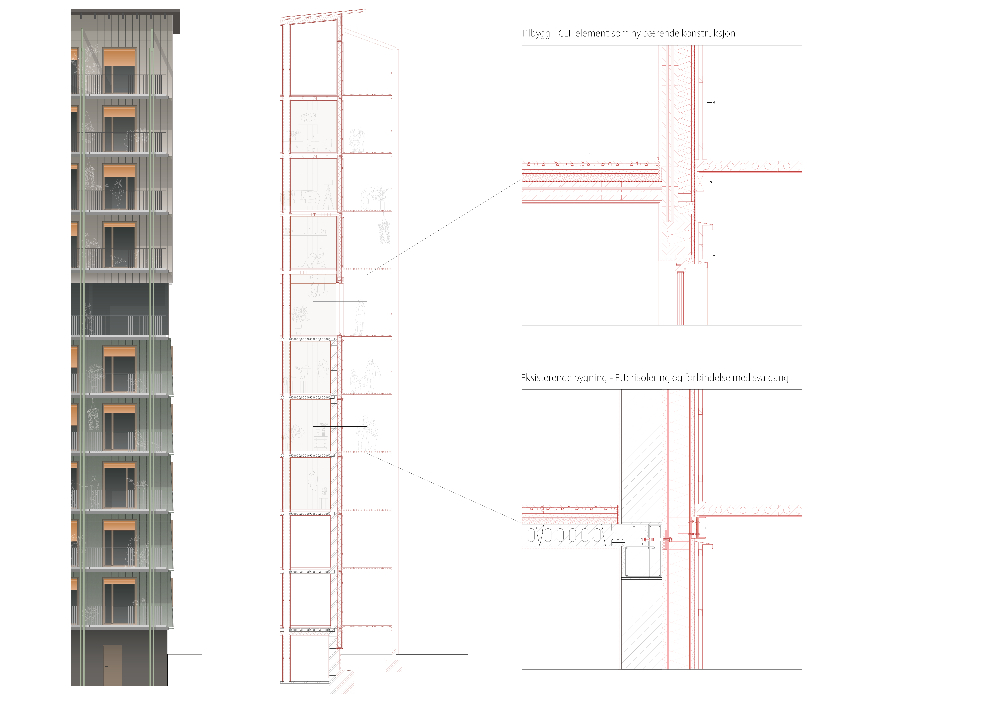
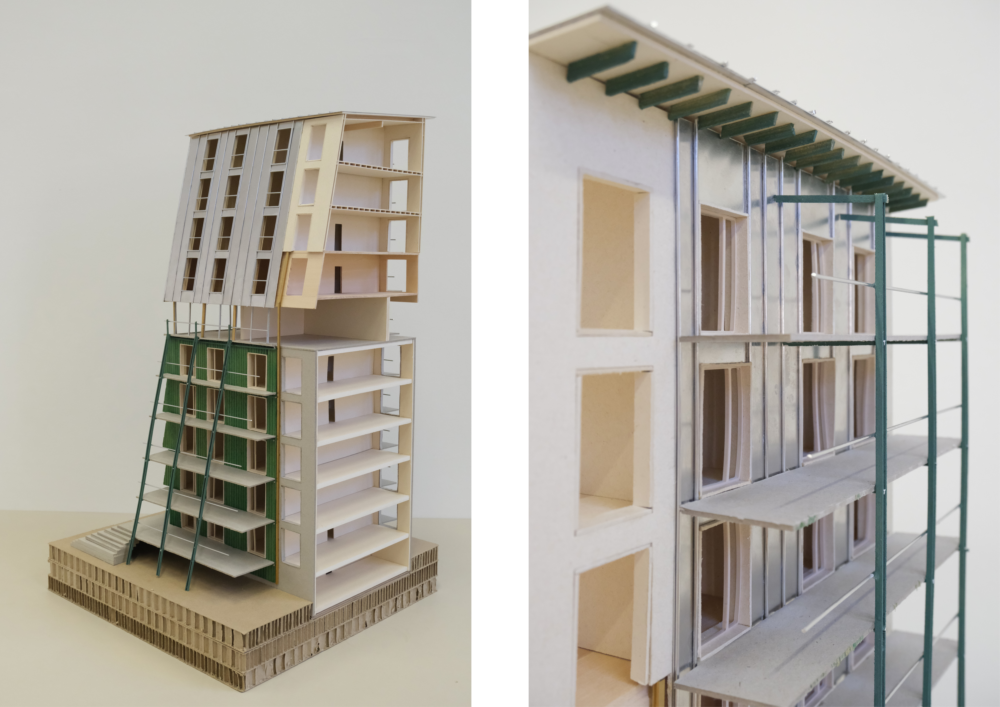